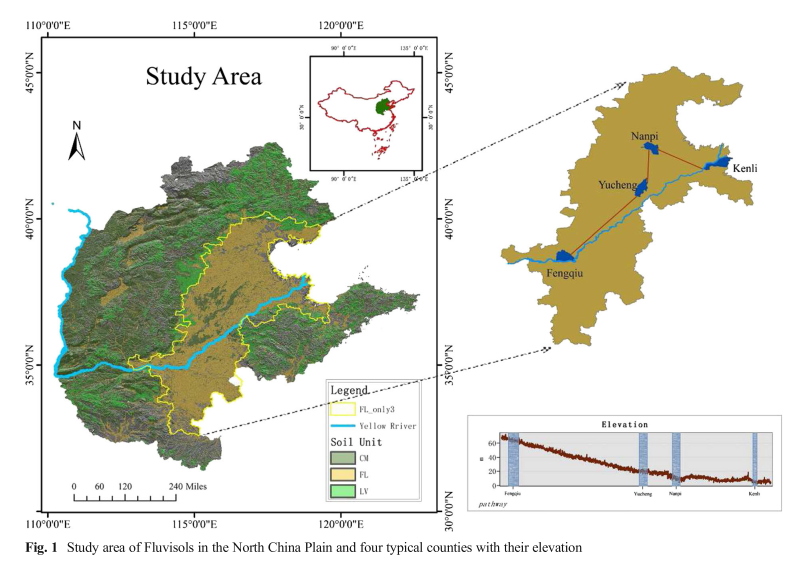
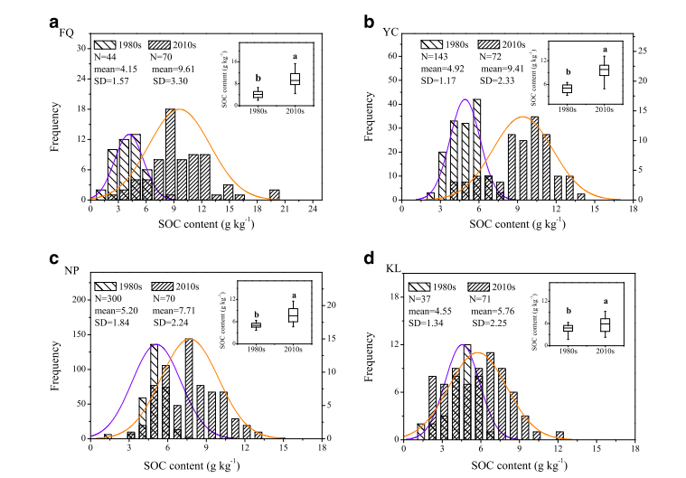
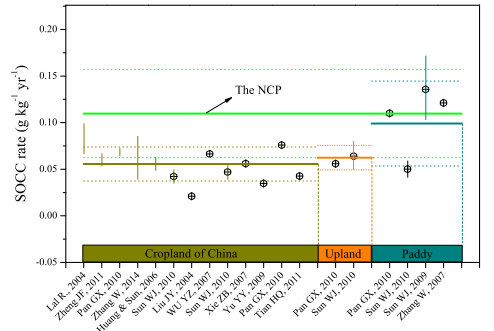
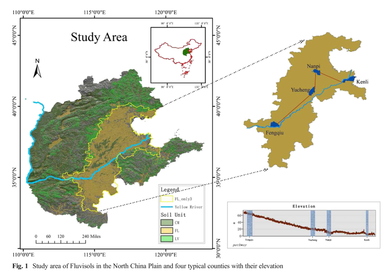
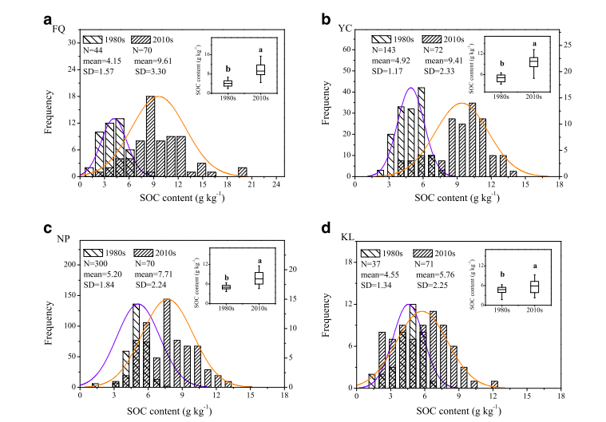
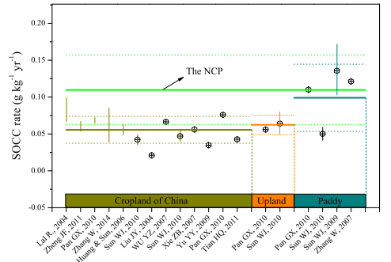

Main results
  
Try to detect the spatiotemporal dynamics and the controlling factors of soil organic carbon (SOC) in the North China Plain (NCP) over the last 30 years: 1980s-2010s.
We investigated the SOC evolution by com- piling data from 32 published papers during the last 30 years. Then we examined the spatial pattern and controlling factors by analysing a two-period sampling observations (1980s and 2010s) and multiple explana- tory variables in four typical counties.… more
  